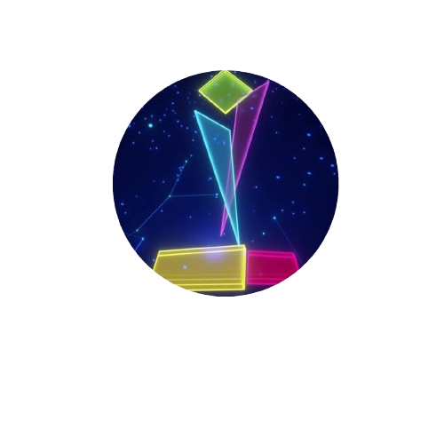
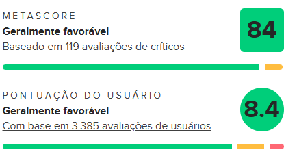
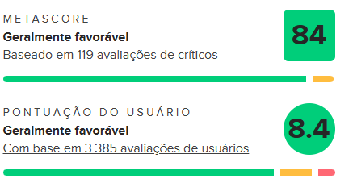

Pré venda
Seja você veterano da franquia ou alguém que nunca teve contato com os jogos do Resident Evil, experimente em primeira mão e antes de todo mundo o poder da RE Engine.

Seja você veterano da franquia ou alguém que nunca teve contato com os jogos do Resident Evil, experimente em primeira mão e antes de todo mundo o poder da RE Engine.
Voice Arts Awards - Best Voiceover - Maggie Robertson (Lady Dimitrescu)
NAVGTR Award - Direction in a Game Cinema - Morimasa Sato
The Game Awards - Best VR Game
The Game Awards - Best Performance - Maggie Robertson
Golden Joystick Awards - Best Audio
Golden Joystick Awards - Playstation Game of the Year
Golden Joystick Awards - Ultimate Game of the Year


 


Não perca tempo e aproveite as vantagens de ser um dos primeiros a viver essa nova e aterrorizante aventura. Resident Evil Village está mais aterrorizante do que nunca — e na pré-venda, você já começa a experiência com o pé direito
CPU: Intel Core i5-7500 / AMD Ryzen 3 1200.
GPU: GTX 1050 / RX 560
RAM: 8 GB
Sistema: Windows 10 (64-bit)
CPU: Intel Core i7-8700 / AMD Ryzen 5 3600
GPU: GTX 1070 / RX 5700
RAM: 16 GB
Sistema: Windows 10 (64-bit)